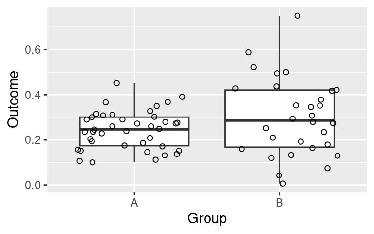
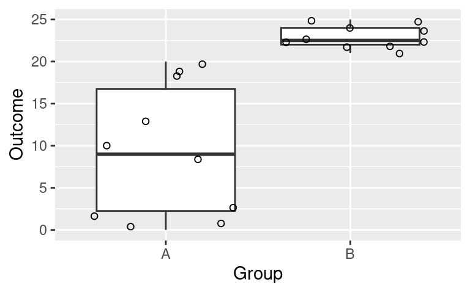
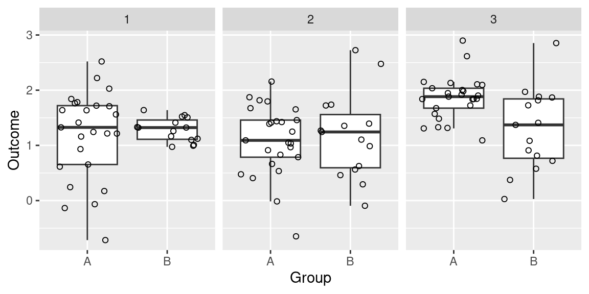

# Generate data
set.seed(16-11-2016)
df <- data.frame(Outcome = c(rbeta(40, 4, 14), # 40 observations in A
rbeta(30, 2, 4)), # 30 in B
Group = c(rep("A", 40), rep("B", 30)))Common-language effect sizes
The goal of this blog post is to share with you a simple R function that may help you to better communicate the extent to which two groups differ and overlap by computing common-language effect sizes.
What is the ‘common-language effect size’?
In 1992, McGraw and Wong introduced the common-language effect size, which they defined as
the probability that a score sampled at random from one distribution will be greater than a score sampled from some other distribution.
For instance, if you have scores on an English reading comprehension task for both French- and German-speaking learners, you can compute the probability that a randomly chosen French-speaking learner will have a higher score than a randomly chosen German-speaking learner. This gives you an idea of how much the groups’ scores overlap, and the number can more easily be communicated to an audience that has no firm notion of what quantiles are or of what standardised effect sizes such as d = 0.3 mean.
Computing common-language effect sizes in R
Below I first generate some data: 40 data points in a group creatively called A vs. 30 data points in group B.
A couple of boxplots to show the spread and central tendencies:

And the key summary statistics:
# A tibble: 2 × 3
Group Mean Standard_Deviation
<chr> <dbl> <dbl>
1 A 0.244 0.0841
2 B 0.301 0.172 On the basis of the group means and standard deviations, McGraw and Wong’s common-language effect size can be computed as follows:
pnorm(0, 0.24 - 0.30, sqrt(0.084^2 + 0.172^2), lower.tail = FALSE)[1] 0.38I.e., there’s a 38% chance that if you put an observation from Group A and one from Group B together at random, the one from Group A will be greater.
Strictly speaking, McGraw and Wong’s method assumes normally distributed, continuous data. While they point out that their measure is quite robust with respect to this assumption, you can use a brute-force method that doesn’t make this assumption to see if that yields different results.
Edit: On Twitter, Guillaume Rousselet suggested a quicker and mor exhaustive brute-force method for computing common-language effect sizes. I’ve updated the code and post to implement his suggestion.
On https://janhove.github.io/RCode/CommonLanguageEffectSizes.R, I provide a function, cles.fnc(), that pairs each observation from the first group to each observation from the second group and then checks how often the observation from the first group is larger than the one from the second group. Ties are also taken into account.
Here’s how the cles.fnc() function works:
# Read in the function
source("https://janhove.github.io/RCode/CommonLanguageEffectSizes.R")
# Set variable you want to compare between the groups,
# the group name,
# the baseline level,
# and the dataset:
cles <- cles.fnc(variable = "Outcome", group = "Group", baseline = "A", data = df)Common-language effect size:
The probability that a random Outcome observation from group A
is higher/larger than a random Outcome observation from the other group(s):
Algebraic method: 0.38
Brute-force method: 0.4The results for both methods aren’t identical (38% vs. 40%), but they’re in the same ballpark. This is more often the case than not.
You can turn off the output by setting the parameter print to FALSE:
## (not run)
# cles <- cles.fnc(variable = "Outcome", group = "Group", baseline = "A", data = df, print = FALSE)You can also extract information from the cles object if you want to pass it on to other functions:
cles$algebraic # McGraw & Wong's method[1] 0.38cles$brute # brute-force method[1] 0.4An example with non-overlapping distributions
The code below generates a dataset with two non-overlapping groups.
# Generate data
set.seed(16-11-2016)
df <- data.frame(Outcome = c(sample(0:20, 10, replace = TRUE),
sample(21:25, 10, replace = TRUE)),
Group = c(rep("A", 10), rep("B", 10)))Boxplots:

McGraw & Wong’s (1992) method suggests that there’s a 6% chance that a random observation in A will be higher than one in B. This may well be true at the population level, but it’s clearly not true at the sample level. The brute-force method pegs this probability at 0%, which may be wrong at the population level, but it’s clearly correct at the sample level.
cles <- cles.fnc(variable = "Outcome", group = "Group", baseline = "A", data = df)Common-language effect size:
The probability that a random Outcome observation from group A
is higher/larger than a random Outcome observation from the other group(s):
Algebraic method: 0.04
Brute-force method: 0For use with more complex datasets
Let’s say you have data from a longitudinal study in which you collected data for Groups A and B at Times 1, 2 and 3, and you want to compare the groups at each time:
# Generate data
set.seed(16-11-2016)
df <- data.frame(Time = c(rep(1, 40), rep(2, 40), rep(3, 40)),
Group = rep(c(rep("A", 25), rep("B", 15)), 3),
Outcome = c(rnorm(25, 1.1, 1.0), rnorm(15, 1.2, 0.3),
rnorm(25, 1.2, 0.6), rnorm(15, 1.2, 0.8),
rnorm(25, 1.8, 0.4), rnorm(15, 1.7, 1.0)))The boxplots:

Using the by() function, you can run cles.fnc() separately for each Time. For more complex datasets, you can include more variables in the INDICES list.
cles <- with(df, # select dataframe df
by(data = df, # group dataframe df
INDICES = list(Time = Time), # by Time
# and run cles.fnc() within each group
FUN = function(x) cles.fnc("Outcome", "Group", "A", data = x, print = FALSE)))
clesTime: 1
$algebraic
[1] 0.45
$brute
[1] 0.55
------------------------------------------------------------
Time: 2
$algebraic
[1] 0.46
$brute
[1] 0.5
------------------------------------------------------------
Time: 3
$algebraic
[1] 0.75
$brute
[1] 0.77Software versions
devtools::session_info()─ Session info ───────────────────────────────────────────────────────────────
setting value
version R version 4.3.1 (2023-06-16 ucrt)
os Windows 10 x64 (build 18363)
system x86_64, mingw32
ui RTerm
language (EN)
collate English_United Kingdom.utf8
ctype English_United Kingdom.utf8
tz Europe/Zurich
date 2023-08-08
pandoc 3.1.1 @ C:/Program Files/RStudio/resources/app/bin/quarto/bin/tools/ (via rmarkdown)
─ Packages ───────────────────────────────────────────────────────────────────
package * version date (UTC) lib source
cachem 1.0.8 2023-05-01 [1] CRAN (R 4.3.1)
callr 3.7.3 2022-11-02 [1] CRAN (R 4.3.1)
cli 3.6.1 2023-03-23 [1] CRAN (R 4.3.1)
colorspace 2.1-0 2023-01-23 [1] CRAN (R 4.3.1)
crayon 1.5.2 2022-09-29 [1] CRAN (R 4.3.1)
devtools 2.4.5 2022-10-11 [1] CRAN (R 4.3.1)
digest 0.6.33 2023-07-07 [1] CRAN (R 4.3.1)
dplyr * 1.1.2 2023-04-20 [1] CRAN (R 4.3.1)
ellipsis 0.3.2 2021-04-29 [1] CRAN (R 4.3.1)
evaluate 0.21 2023-05-05 [1] CRAN (R 4.3.1)
fansi 1.0.4 2023-01-22 [1] CRAN (R 4.3.1)
farver 2.1.1 2022-07-06 [1] CRAN (R 4.3.1)
fastmap 1.1.1 2023-02-24 [1] CRAN (R 4.3.1)
forcats * 1.0.0 2023-01-29 [1] CRAN (R 4.3.1)
fs 1.6.3 2023-07-20 [1] CRAN (R 4.3.1)
generics 0.1.3 2022-07-05 [1] CRAN (R 4.3.1)
ggplot2 * 3.4.2 2023-04-03 [1] CRAN (R 4.3.1)
glue 1.6.2 2022-02-24 [1] CRAN (R 4.3.1)
gtable 0.3.3 2023-03-21 [1] CRAN (R 4.3.1)
hms 1.1.3 2023-03-21 [1] CRAN (R 4.3.1)
htmltools 0.5.5 2023-03-23 [1] CRAN (R 4.3.1)
htmlwidgets 1.6.2 2023-03-17 [1] CRAN (R 4.3.1)
httpuv 1.6.11 2023-05-11 [1] CRAN (R 4.3.1)
jsonlite 1.8.7 2023-06-29 [1] CRAN (R 4.3.1)
knitr 1.43 2023-05-25 [1] CRAN (R 4.3.1)
labeling 0.4.2 2020-10-20 [1] CRAN (R 4.3.0)
later 1.3.1 2023-05-02 [1] CRAN (R 4.3.1)
lifecycle 1.0.3 2022-10-07 [1] CRAN (R 4.3.1)
lubridate * 1.9.2 2023-02-10 [1] CRAN (R 4.3.1)
magrittr 2.0.3 2022-03-30 [1] CRAN (R 4.3.1)
memoise 2.0.1 2021-11-26 [1] CRAN (R 4.3.1)
mime 0.12 2021-09-28 [1] CRAN (R 4.3.0)
miniUI 0.1.1.1 2018-05-18 [1] CRAN (R 4.3.1)
munsell 0.5.0 2018-06-12 [1] CRAN (R 4.3.1)
pillar 1.9.0 2023-03-22 [1] CRAN (R 4.3.1)
pkgbuild 1.4.2 2023-06-26 [1] CRAN (R 4.3.1)
pkgconfig 2.0.3 2019-09-22 [1] CRAN (R 4.3.1)
pkgload 1.3.2.1 2023-07-08 [1] CRAN (R 4.3.1)
prettyunits 1.1.1 2020-01-24 [1] CRAN (R 4.3.1)
processx 3.8.2 2023-06-30 [1] CRAN (R 4.3.1)
profvis 0.3.8 2023-05-02 [1] CRAN (R 4.3.1)
promises 1.2.0.1 2021-02-11 [1] CRAN (R 4.3.1)
ps 1.7.5 2023-04-18 [1] CRAN (R 4.3.1)
purrr * 1.0.1 2023-01-10 [1] CRAN (R 4.3.1)
R6 2.5.1 2021-08-19 [1] CRAN (R 4.3.1)
Rcpp 1.0.11 2023-07-06 [1] CRAN (R 4.3.1)
readr * 2.1.4 2023-02-10 [1] CRAN (R 4.3.1)
remotes 2.4.2.1 2023-07-18 [1] CRAN (R 4.3.1)
rlang 1.1.1 2023-04-28 [1] CRAN (R 4.3.1)
rmarkdown 2.23 2023-07-01 [1] CRAN (R 4.3.1)
rstudioapi 0.15.0 2023-07-07 [1] CRAN (R 4.3.1)
scales 1.2.1 2022-08-20 [1] CRAN (R 4.3.1)
sessioninfo 1.2.2 2021-12-06 [1] CRAN (R 4.3.1)
shiny 1.7.4.1 2023-07-06 [1] CRAN (R 4.3.1)
stringi 1.7.12 2023-01-11 [1] CRAN (R 4.3.0)
stringr * 1.5.0 2022-12-02 [1] CRAN (R 4.3.1)
tibble * 3.2.1 2023-03-20 [1] CRAN (R 4.3.1)
tidyr * 1.3.0 2023-01-24 [1] CRAN (R 4.3.1)
tidyselect 1.2.0 2022-10-10 [1] CRAN (R 4.3.1)
tidyverse * 2.0.0 2023-02-22 [1] CRAN (R 4.3.1)
timechange 0.2.0 2023-01-11 [1] CRAN (R 4.3.1)
tzdb 0.4.0 2023-05-12 [1] CRAN (R 4.3.1)
urlchecker 1.0.1 2021-11-30 [1] CRAN (R 4.3.1)
usethis 2.2.2 2023-07-06 [1] CRAN (R 4.3.1)
utf8 1.2.3 2023-01-31 [1] CRAN (R 4.3.1)
vctrs 0.6.3 2023-06-14 [1] CRAN (R 4.3.1)
withr 2.5.0 2022-03-03 [1] CRAN (R 4.3.1)
xfun 0.39 2023-04-20 [1] CRAN (R 4.3.1)
xtable 1.8-4 2019-04-21 [1] CRAN (R 4.3.1)
yaml 2.3.7 2023-01-23 [1] CRAN (R 4.3.0)
[1] C:/Users/VanhoveJ/AppData/Local/R/win-library/4.3
[2] C:/Program Files/R/R-4.3.1/library
──────────────────────────────────────────────────────────────────────────────